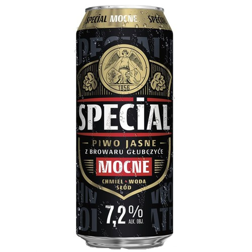
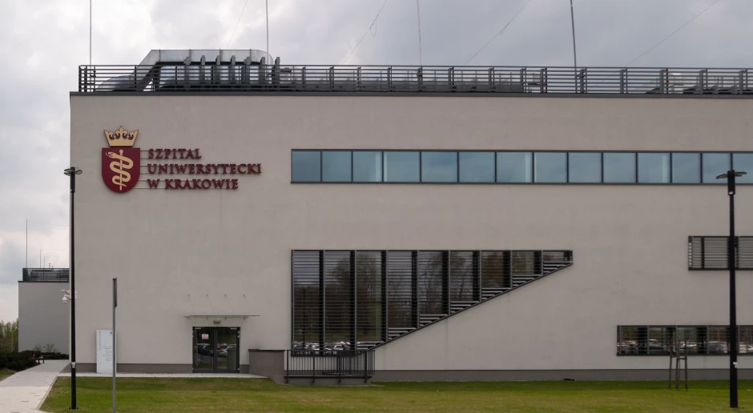

Niecodzienny fenomen wstrząsnął krakowskimi sklepami, pubami i... sercami studentów. Od środy sprzedaż piwa i napojów energetycznych runęła jak Wieża Babel na Kacu. Spadki sięgają aż 40%, a niektórzy twierdzą, że „miasto przestało chcieć się bawić”.
Puby puste, lodówki pełne

„W środę otworzyłem bar, a tam cisza jak na mszy w Tygodniu Trzeźwości” – skarży się pan Rysiek z pubu „Złoty Kufel”. „Sprzedałem dwa piwa i jedno Oranżadę Hell, bo klient myślał, że to energetyk.”
Hurtownicy przecierają oczy – zamówień brak, a magazyny pełne puszek. Niektórzy podejrzewają, że to kara od bóstw imprezowych za zbyt nudną majówkę.
Naukowcy wchodzą do gry
Uniwersytet Jagielloński powołał zespół ekspertów złożony z socjologów, meteorologów i jednego barmana. Celem: rozgryźć tajemniczy zanik chęci na browarka i energetyka.
„To może być efekt zbiorowej medytacji, trendu #NieDajEnergolowi albo po prostu koniec pieniędzy po majówce” – tłumaczy dr Agnieszka Domańska, która na wszelki wypadek zrezygnowała z kawy.
Teorie spiskowe i pogoda
- 🌧️ Zimno i deszcz – nawet butelka nie chce z lodówki wychodzić.
- 🧘♂️ Moda na trzeźwość – ponoć zdrowie lepsze, ale kto to badał?
- 👮 Plotki o kontrolach – podobno ktoś dostał mandat za 0,0%. Szok!
- 🧃 Zamiana energetyków na yerba mate – podobno działa, ale smakuje jak mokry karton.
- 🛌 Legenda miejska – podobno jeden z najbardziej znanych koneserów trunków trafił do szpitala, a lud uznał to za znak, by na chwilę odpuścić. Internet nadał mu pseudonim „Mistrz Kapsla”.

Co na to branża?
„Rozważamy promocję 1+5 gratis albo 'piwo w cenie ogórka'” – mówi przedstawiciel handlowy. Branża trzyma kciuki za weekend i studentów wracających z sesji poprawkowej.
Przyszłość bez promili?
Naukowcy zapowiadają raport, a mieszkańcy Krakowa... siedzą w domach, piją herbatki i scrollują memy o końcu imprezowania. Czy to koniec jednej epoki? Czy może tylko chwilowa abstynencja z przyczyn nieznanych? Czas pokaże.